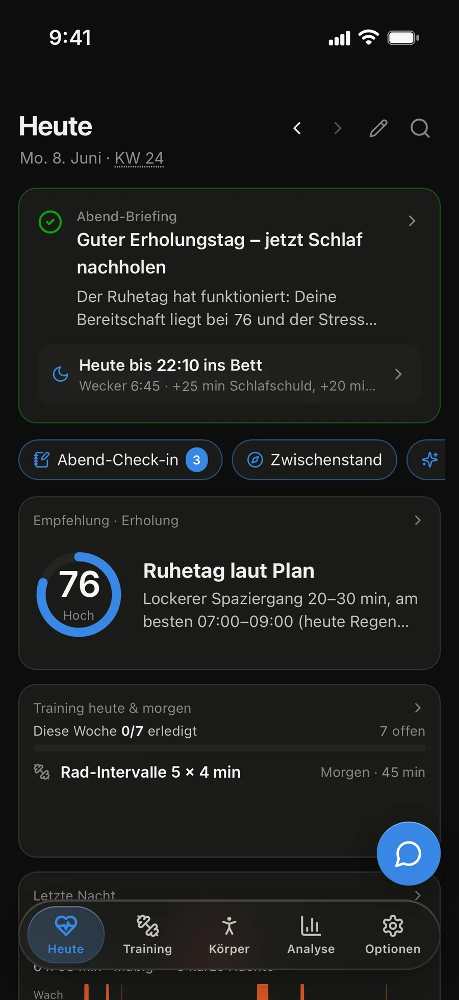

Coach, Trainingsplan, Strecken und Auswertungen an einem Ort.
VitalDeck holt die Daten deiner Garmin-Uhr und macht mehr daraus als Statistiken. Ein KI-Coach ordnet Schlaf und Erholung ein, plant dein Training Woche für Woche und schickt Einheiten direkt auf die Uhr. Dazu Streckenplanung, Zusammenhänge und Auswertungen bis ins Detail.


Drei Gründe für VitalDeck
Ein Coach, der mitarbeitet.
Er kennt deine Werte, erstellt Trainingspläne, schlägt Alternativen vor, wenn der Tag nicht passt, und sendet Einheiten an deine Uhr. Du bestätigst mit einem Tipp.
Versteht statt nur zeigt.
Tagesbereitschaft, Schlafanalyse, Frühwarnung bei Erkältung, Zusammenhänge wie „Schlaf heute, HRV morgen“ und Auswertungen jeder Einheit, alles direkt berechnet.
Deine Daten, dein Server.
Läuft per Docker auf einem Raspberry Pi, NAS oder Heimserver. Kein Konto bei uns, keine Cloud, kein Abo für den Kern.
So sieht es aus
Echte Screenshots aus der App, gefüllt mit Beispieldaten. Die Karte ist unkenntlich gemacht.


Was drin ist
- Heute
- Morgen- und Abend-Briefing, Bereitschaft, frei anordenbare Widgets
- Schlaf und Erholung
- Hypnogramm, HRV, Ruhepuls, Body Battery, Schlafschuld, Zubettgeh-Empfehlung
- Training
- Aktivitäten mit Karte und Verläufen, Belastung, Fitness und Form, Kalender, Rekorde, Kraft- und Kettlebell-Auswertung
- Strecken planen
- Runden oder von A nach B für Laufen, Trailrunning, Wandern, Rennrad, Gravel und Mountainbike. Länge, Untergrund und Höhenmeter frei wählbar, Wind und Regen fließen mit ein. Dazu Höhenprofil, Import per GPX oder Komoot-Link und direkt als Strecke auf die Garmin-Uhr
- Analyse
- Trends, Vergleiche, Ziele mit Prognose, Zusammenhänge zwischen beliebigen Werten
- Überall
- App fürs Handy (PWA), Hell und Dunkel, Push-Mitteilungen, funktioniert auch offline
Kostenlos und Pro
Die Aufteilung ist vorläufig. Deine Antwort auf der Warteliste hilft, sie festzulegen.
VitalDeck
- Garmin-Abgleich und eigene Datenbank
- Dashboard, alle Auswertungen, Kalender, Karten, Streckenplanung
- Frühwarnung, Ziele, Zubettgeh-Empfehlung
- PWA, Push, offline
VitalDeck Pro
- Alles aus der kostenlosen Version
- KI-Coach im Chat mit Gedächtnis
- Briefings und Einschätzungen per KI
- Trainingspläne, die sich jede Woche anpassen
- Einheiten und Alternativen direkt auf die Uhr
Pro nutzt deinen eigenen Claude-API-Schlüssel. Die Kosten dafür zahlst du direkt beim Anbieter, typischerweise wenige Euro im Monat.
Noch lange nicht fertig
VitalDeck wächst weiter, und du kannst mitbestimmen, wohin. Fehlt dir eine Auswertung, eine Sportart oder eine Funktion? Schreib es mir. Ich lese jeden Vorschlag, und was vielen hilft, baue ich ein. Das Formular unten ist ein guter Anfang, später geht es auch direkt auf GitHub.
Ehrlich gesagt
VitalDeck nutzt eine inoffizielle Schnittstelle zu Garmin Connect, wie die meisten Open-Source-Projekte in diesem Bereich. Sie funktioniert seit Jahren zuverlässig, kann aber kurzzeitig ausfallen, wenn Garmin etwas ändert. VitalDeck ist kein Produkt von Garmin und ersetzt keinen ärztlichen Rat.
Interessiert?
Trag dich ein. Ich melde mich nur, wenn es Neuigkeiten gibt.